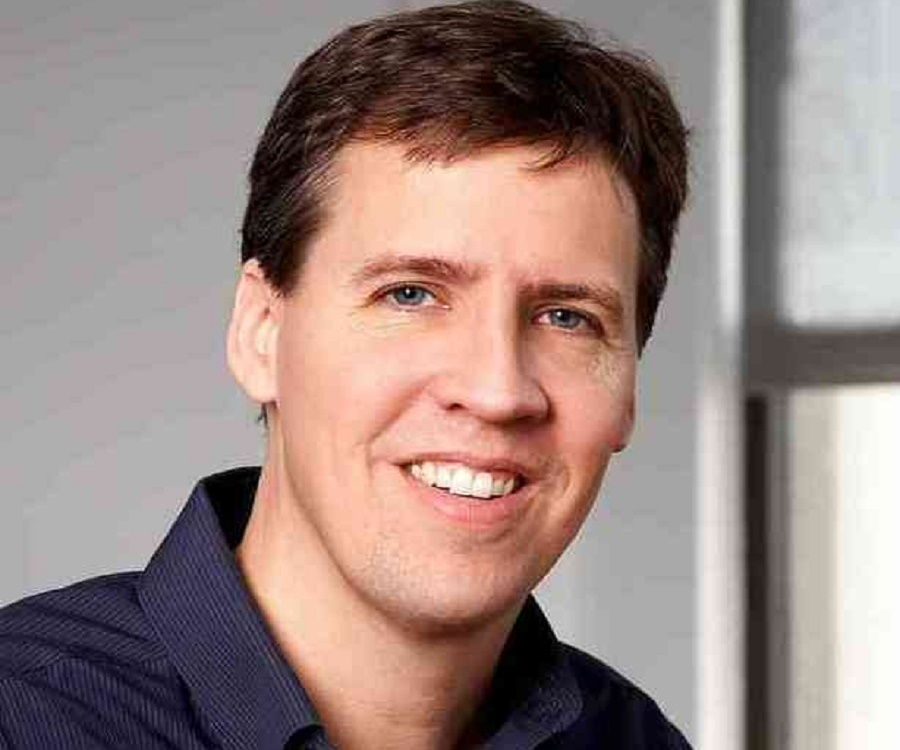
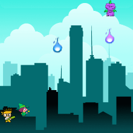
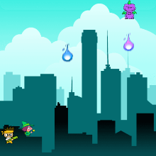

My favorite hooby
Cycling
I like cycling as it is very fun and it keeps our body fit. It helps us get our mind of things.
chatbot
Isparation

Joanne Rowling CH, OBE, HonFRSE, FRCPE, FRSL (/ˈroʊlɪŋ/ ROH-ling;[1] born 31 July 1965), better known by her pen name J. K. Rowling, is a British author, philanthropist, film producer, television producer, and screenwriter. She is best known for writing the Harry Potter fantasy series, which has won multiple awards and sold more than 500 million copies,[2][3] becoming the best-selling book series in history.[4] The books are the basis of a popular film series, over which Rowling had overall approval on the scripts[5] and was a producer on the final films.[6] She also writes crime fiction under the pen name Robert Galbraith.
Born in Yate, Gloucestershire, Rowling was working as a researcher and bilingual secretary for Amnesty International in 1990 when she conceived the idea for the Harry Potter series while on a delayed train from Manchester to London.[7] The seven-year period that followed saw the death of her mother, birth of her first child, divorce from her first husband, and relative poverty until the first novel in the series, Harry Potter and the Philosopher's Stone, was published in 1997. There were six sequels, of which the last was released in 2007. Since then, Rowling has written several books for adult readers: The Casual Vacancy (2012) and—under the pseudonym Robert Galbraith—the crime fiction Cormoran Strike series.[8] In 2020, her "political fairytale" for children, The Ickabog, was released in instalments in an online version.[9]
Rowling has lived a "rags to riches" life in which she progressed from living on benefits to being named the world's first billionaire author by Forbes.[10] Rowling disputed the assertion, saying she was not a billionaire.[11] Forbes reported that she lost her billionaire status after giving away much of her earnings to charity.[12] Her UK sales total in excess of £238 million, making her the best-selling living author in Britain.[13] The 2021 Sunday Times Rich List estimated Rowling's fortune at £820 million, ranking her as the 196th richest person in the UK.[14] Time named her a runner-up for its 2007 Person of the Year, noting the social, moral, and political inspiration she has given her fans.[15] Rowling was appointed a member of the Order of the Companions of Honour (CH) in the 2017 Birthday Honours for services to literature and philanthropy. In October 2010, she was named the "Most Influential Woman in Britain" by leading magazine editors.[16] Rowling has supported multiple charities, including Comic Relief, One Parent Families, and Multiple Sclerosis Society of Great Britain, as well as launching her own charity, Lumos. Since late 2019, Rowling has publicly voiced her opinions on transgender people and related civil rights. These views have been criticised as transphobic by many LGBT rights organisations and some feminists, but have received support from some other feminists.

Kinney works full-time as a writer/illustrator. He also created the kid-friendly website Poptropica which includes two islands called "Wimpy Wonderland" and "Wimpy Boardwalk", where the Diary of a Wimpy Kid characters and events are featured in the Poptropica universe.[8]
Over 250 million copies of the Diary of a Wimpy Kid books have sold globally[9] as of 2020 and the series was developed into feature films for which Kinney served as executive producer.
In May 2015, Kinney and his wife Julie opened "An Unlikely Story," a local bookstore and cafe in Plainville, Massachusetts.[10] Kinney advocates that kids should spend time reading as an alternative to screen time.[11]
Kinney guest-hosted 10 episodes of the 10th season of WGBH local quiz bowl production High School Quiz Show while regular host Billy Costa was away on a special assignment. Kinney hosted the second half of the first-round games, the quarter-finals, and the semi-finals, while Costa hosted the first half of the first-round games and returned to Boston in time for the finals.[citation needed]
 
